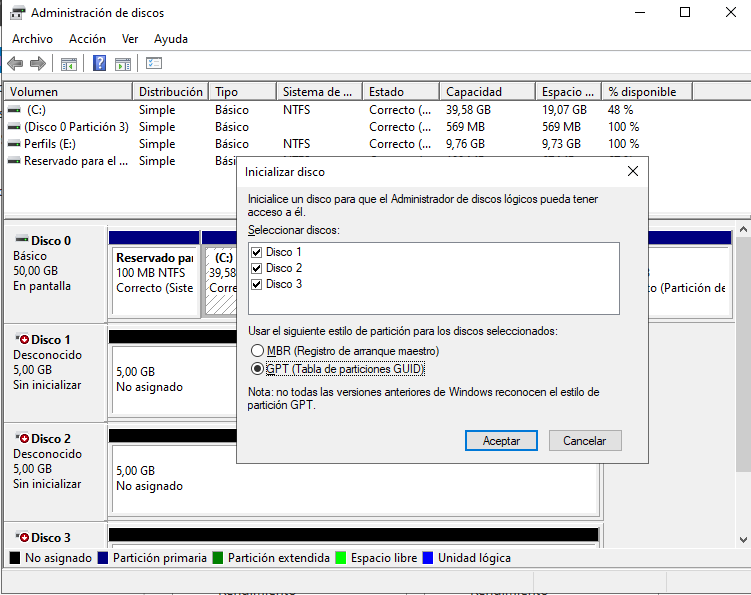
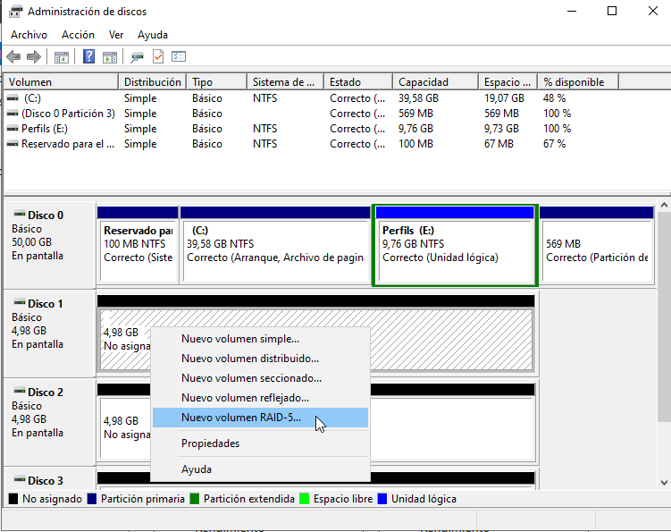
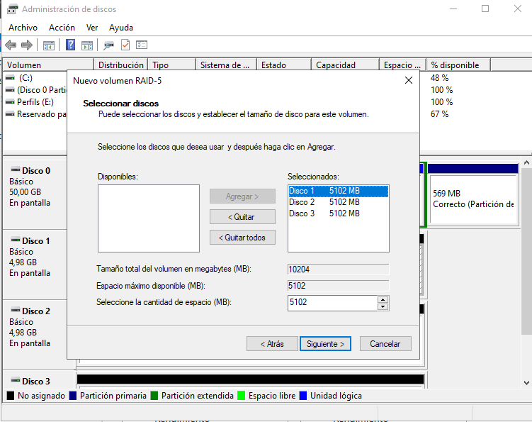
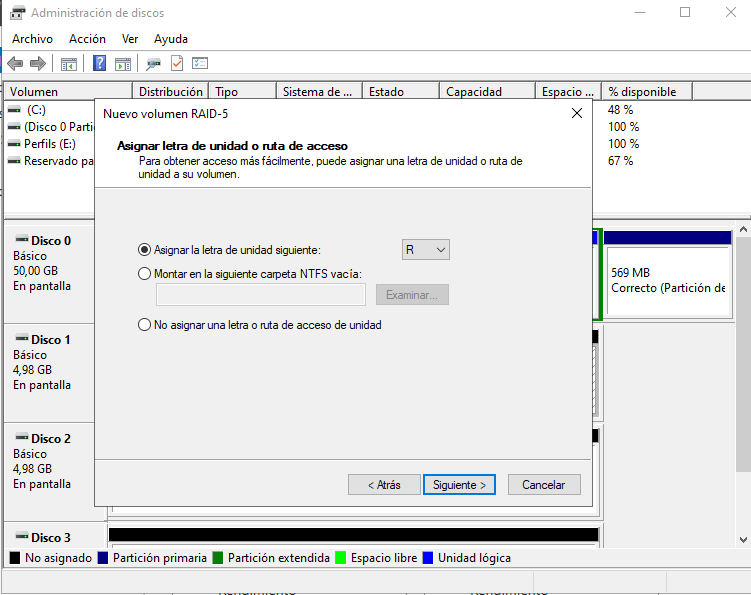
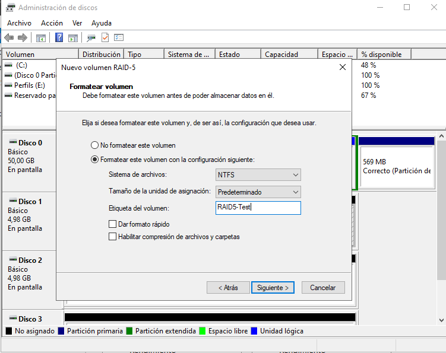
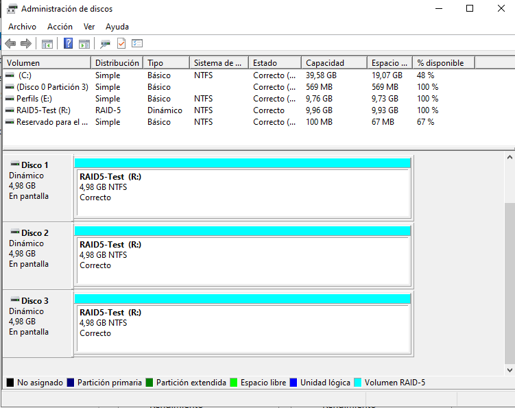
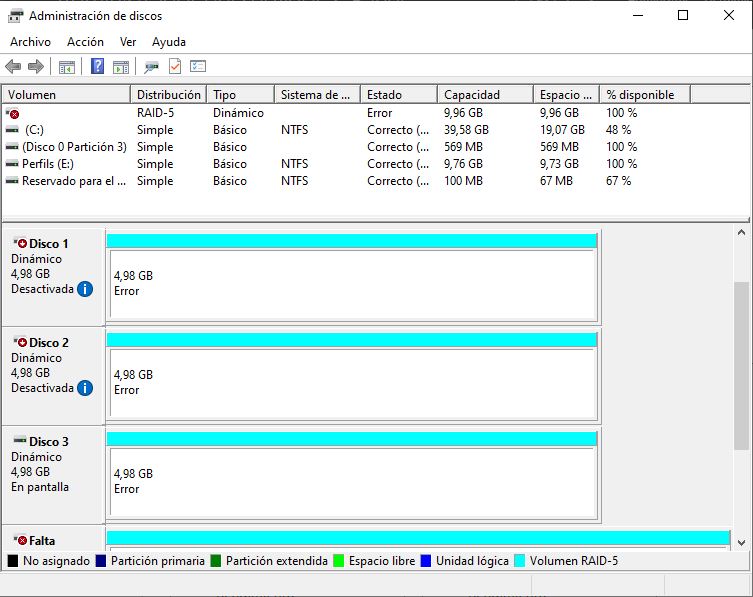
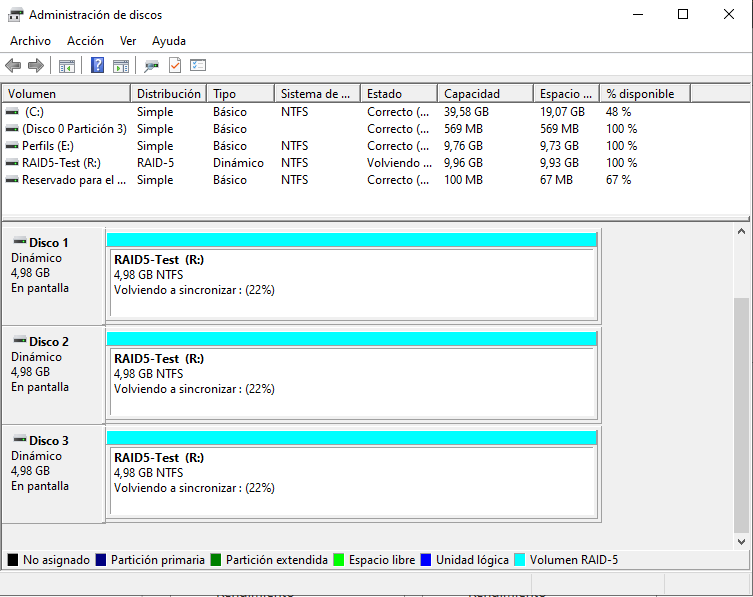

Implementación de RAID 5
En esta fase se realiza la configuración de un sistema de almacenamiento redundante RAID 5 mediante discos virtuales y herramientas integradas en Windows Server 2022. Se utilizan un mínimo de tres discos duros virtuales y se comprueba el funcionamiento, la tolerancia a fallos y la recuperación del volumen.
Preparación de la máquina virtual
- Crear una máquina virtual con Windows Server 2022 instalado.
- Apagar la máquina y añadir tres discos virtuales adicionales (por ejemplo, de 10 GB cada uno, sin formatear).
- Reiniciar la máquina virtual una vez añadidos los discos.

Inicializar y configurar los discos
- Abrir Disk Management ejecutando
diskmgmt.msc. - Al abrirse, aparecerá un asistente para inicializar los nuevos discos.
- Seleccionar GPT como tipo de partición.
- No formatear ni crear particiones en los discos. Dejarlos como espacio no asignado.

Crear el RAID 5 desde el Administrador de discos
- Hacer clic derecho sobre uno de los nuevos discos y seleccionar New RAID-5 Volume.
- En el asistente, seleccionar los otros dos discos para formar el volumen RAID-5.
- Asignar una letra al volumen (por ejemplo,
R:). - Asignar nombre: RAID5-Test y seleccionar formato NTFS.
- Esperar a que finalice el formato. El volumen aparecerá como una única unidad lógica combinando los 3 discos.





Pruebas de funcionalidad
- Copiar varios archivos al volumen
R:\, como por ejemplo: - Una carpeta con documentos
- Imágenes
- Archivos de texto
- Abrir algunos archivos para comprobar que el volumen funciona correctamente.

Simulación de fallo (desconectar un disco)
- Volver a Disk Management.
- Hacer clic derecho sobre uno de los discos del RAID y seleccionar Sin Conexión.
- El volumen aparecerá como Error de Redundancia, pero seguirá siendo accesible.
- Intentar abrir archivos para verificar que siguen disponibles a pesar del fallo de un disco.


Simulación de segundo fallo
- Poner Offline un segundo disco del RAID.
- Ahora el volumen quedará inaccesible. Windows mostrará un error y no se podrá acceder a los archivos.
- Esto demuestra que RAID 5 solo tolera un fallo simultáneo.


Recuperación
- Volver a poner Online uno de los discos que se había desconectado.
- El volumen debería iniciar un proceso de recuperación automática (rebuild).
- Una vez completada la reconstrucción, volver a acceder a
R:\y comprobar que los archivos están intactos.


Conclusiones y observaciones
- RAID 5 distribuye tanto los datos como la paridad entre todos los discos.
- Tolera un único fallo sin pérdida de datos.
- Ofrece un buen equilibrio entre rendimiento, capacidad y seguridad.
- No sustituye una copia de seguridad: si fallan dos discos o hay corrupción de datos, se puede perder toda la información.
- El proceso de reconstrucción puede ser largo y estresante para los discos restantes.